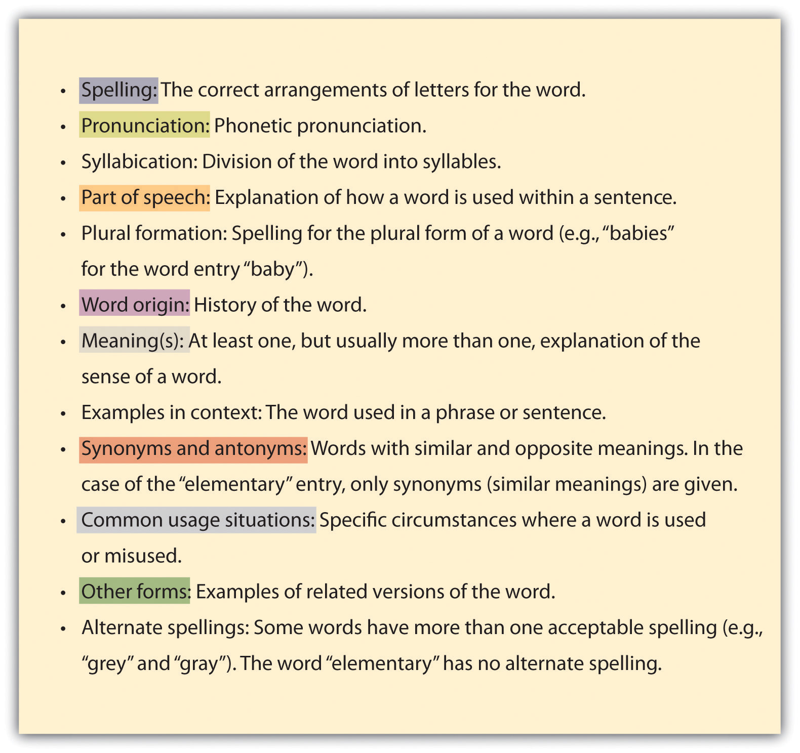
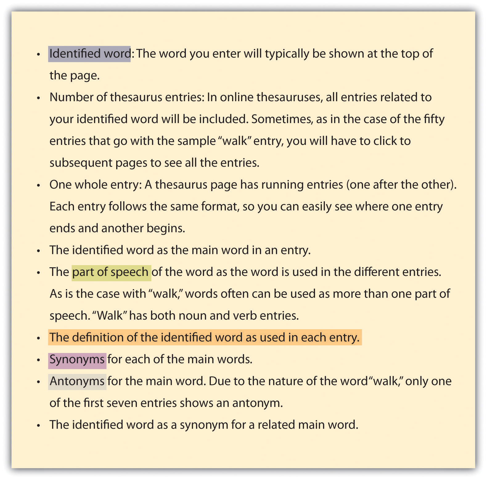
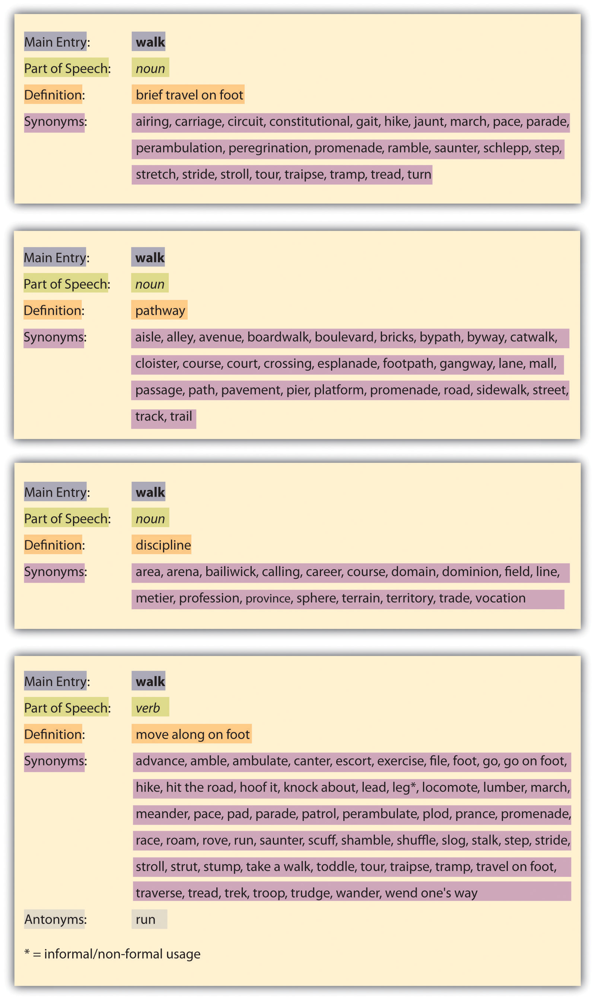

Dictionaries and thesauruses provide writing assistance for writers of all levels of experience and ability. Think of them as tools that will help you to do your very best writing. A dictionary can help you determine the precise denotations of words, while a thesaurus, used responsibly, can help you to capture subtle differences in the connotations of words.
Technology is changing the face of dictionaries. A short twenty or thirty years ago, a good graduation gift for a college-bound student was a hardcover dictionary. Today very few college students even own one because online dictionaries are so readily available. Using an online dictionary, you can look up a word in the time it takes to type it, as opposed to taking the time to flip pages and scan through a page of words in a print dictionary. On the other hand, a hard-copy dictionary is still a great backup if you’re unable to get online, and it can lead to some surprising discoveries of other words on the same page, just as browsing through a shelf of library books can put you in contact with books you might not have otherwise encountered.
The important issue is that you use a dictionary of some kind and that you understand what it can provide for you. Whether you use a print or online dictionary, the entries offer a wealth of information. Figure 17.2 includes some of the most common dictionary entry components. Following the list is a color-coded entry for “elementary” (from Dictionary.com, based on the Random House Unabridged Dictionary) showing where various parts of the entry can be found:
Figure 17.2
Figure 17.3

Like dictionaries, thesauruses are available in both print and online media. And as with dictionaries, the convenience of modern technology dictates that online thesauruses are the preferred choice of most college students these days. One warning about thesauruses: they can be overused or used out of context. You might be tempted to use a “fancier” synonymA word with a meaning similar to another word. or antonymA word with the opposite meaning of another word. for a word when a simple and direct approach might be best.
Whether you use an online or hard-copy thesaurus, you will encounter the following features.
Figure 17.4
Figure 17.5 shows four color-coded entries for the word “walk” (out of fifty) at Thesaurus.com (based on Roget’s Thesaurus).
Figure 17.5
Use a dictionary to answer these questions:
Use a thesaurus to write five versions of the following sentence that mean roughly the same thing. Change at least two words in each version:
Hannah considered accepting a job with Bellefor Inc. but decided against it.